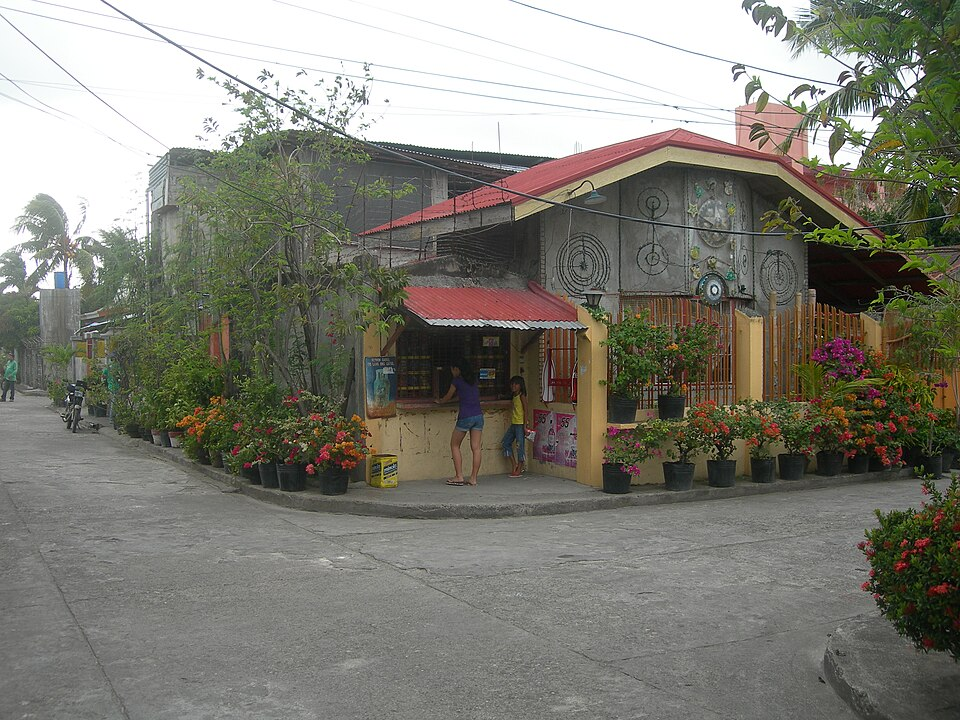

Ang Bintana sa Kanto

Pagpatak ng alas-kwatro, dito nagtitipon ang mga galing school at trabaho sa ilalim ng pulang bubong. Aling Nena takes pride in her potted bougainvilleas out front, while one familiar suki always finds an excuse to stand by that exact window whenever her daughter is on shift.